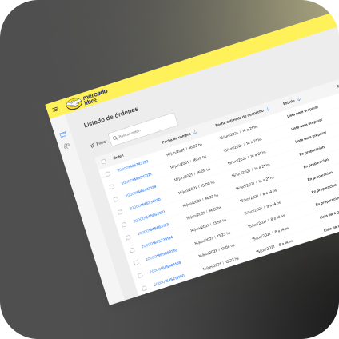
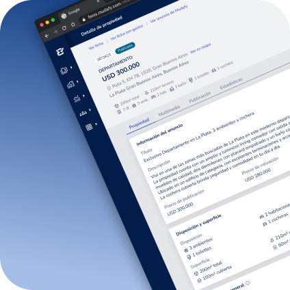
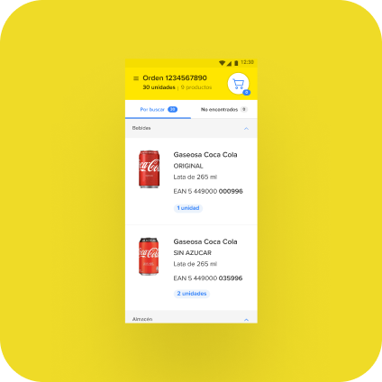
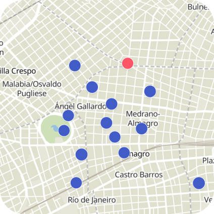
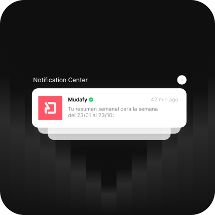
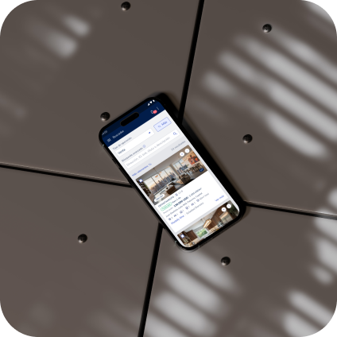
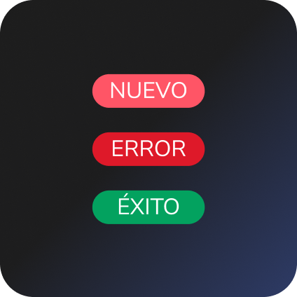
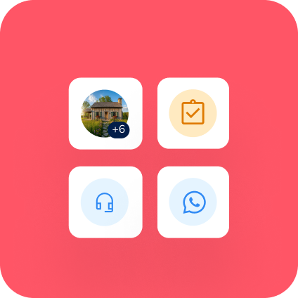

ABOUT ME
I'm a B2B & SaaS Product Designer who turns complexity into clarity using data-driven insights.
I work cross-functionally to deliver strategic solutions that create real business value at scale.








Product Strategy & Discovery
From discovery to scaled outcomes, I guide products through research, validation, and data-driven decision-making.
B2B & SaaS Design
Specialized in complex products where clarity and usability directly impact adoption and retention.
Data & User Research
I combine behavioral analytics with qualitative insights to make informed strategic decisions.
Cross-Functional Leadership
I work seamlessly with engineering, product, and business teams to translate insights into reality.
EXPERIENCE
Product Designer
- Achieved a 13% year-over-year increase in transactions and 52% net revenue growth within one year by leading 3 strategic projects that streamlined the experience of 500+ real estate advisors across 30 offices in Argentina and Mexico.
- Built and scaled a design system in 6 months, defining foundations and developing a library of 36 reusable components, ensuring visual and functional consistency through continuous testing.
- Designed, implemented, and validated the first version of the internal CRM tool in 4 months, optimizing user operations and workflows.
- Produced and published 30+ FAQs and 10+ instructional videos for the Help Center and Mudacademy, improving onboarding and self-service support through scriptwriting, recording, editing, and publishing educational content.
Senior UX Designer
- Generated USD 1.4M in revenue in the first 6 months by leading the design and development of an Android app and a desktop platform that optimized purchase order management for 78 employees across 3 stores in Brazil.
Mid-Senior UX Designer
- Reduced late deliveries from 5.5% to 2.1% in Brazil and from 7.4% to 3.4% in Argentina within 2 months by contributing to the development of a benefits program that optimized package dispatch for 435 sellers.
- Ensured a smooth and successful implementation in under 3 months by leading the benefits program launch in Colombia and Mexico.
- Improved flexibility and customer satisfaction by designing and directing the user experience for package pickup services on weekends and holidays.
UX Designer
- Increased adoption and expansion of Mercado Envíos Flex by contributing to the design of 4 strategic projects aimed at improving user experience.
Digital Designer
- Ensured brand consistency for Iberostar by adapting 3 full display advertising campaigns according to brand guidelines.
- Launched a responsive website for a luxury residential complex in Riviera Maya, enhancing navigation and property presentation.
- Supported client communications by collaborating on 2 strategic client presentations.
SKILLS